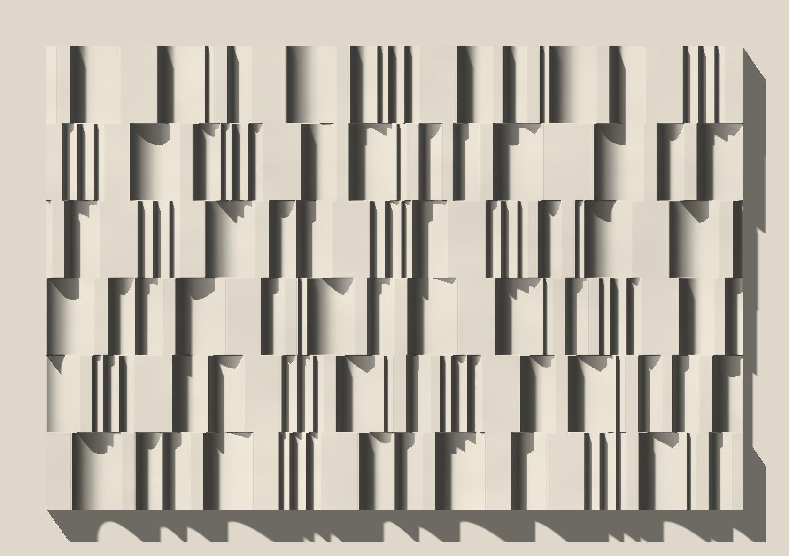
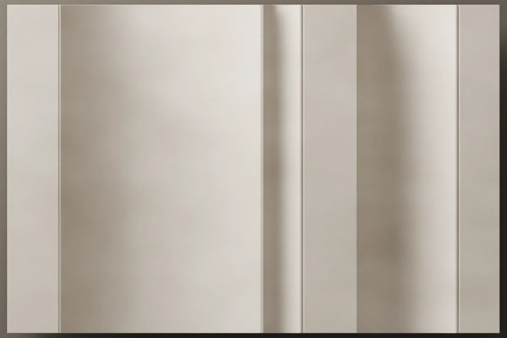
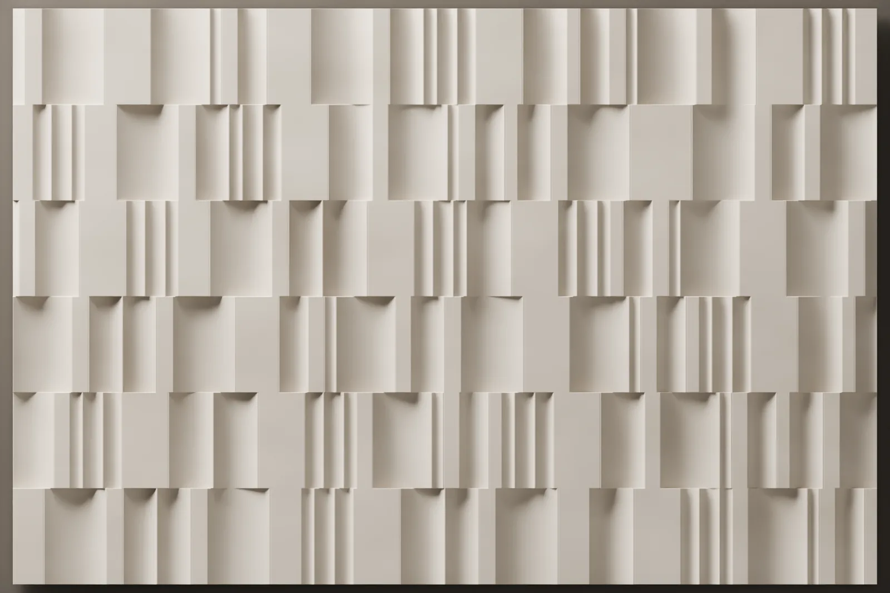
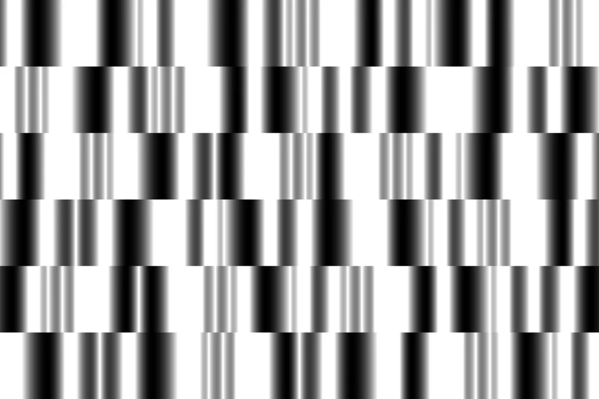

Fugato
We drew a profile of coves and flat bands and divided it across three moulds. The 600 × 400 mm plates are laid in courses, each course shifted from the last, and every plate can go either way up, so the same sequence almost never repeats on the wall.

- Size
- 600 × 400 mm (plate)
- Relief
- 40 mm
- Layout
- Three moulds, staggered courses
- Material
- Lumina PMAG™ (polymer-modified composite gypsum)
- Surface
- Paint-ready, or with an artisan finish



The pattern
In a fugue, one melody enters again and again, in different voices and at different moments. In Fugato the melody is a profile: upright coves with flat bands between them. The profile is divided across three moulds, and each mould carries its coves and bands at different widths.
Each plate can be laid as cast or turned through 180 degrees, so the three moulds give six different plates, and a run of them rarely repeats on the wall.
How it reads in light
The image at the top of the page is in live light. The coves drop to 40 mm; with the light at the side, one edge of each cove throws a long, clean shadow and the wall reads like a score of vertical lines. As the light turns head-on the shadows shorten and the coves soften into a gentle curve.
On the wall
Fugato is built from 600 × 400 mm plates in courses 400 mm high. Each course is shifted against the one below, and no end piece is shorter than 90 mm. Every plate ends on the same flat crest, so any plate meets its neighbour flush in a butt joint. The last course is cut on site where it reaches the ceiling; the shifts and the cuts are set out on the layout drawing.
To see how this design would sit on your wall, send the wall dimensions.